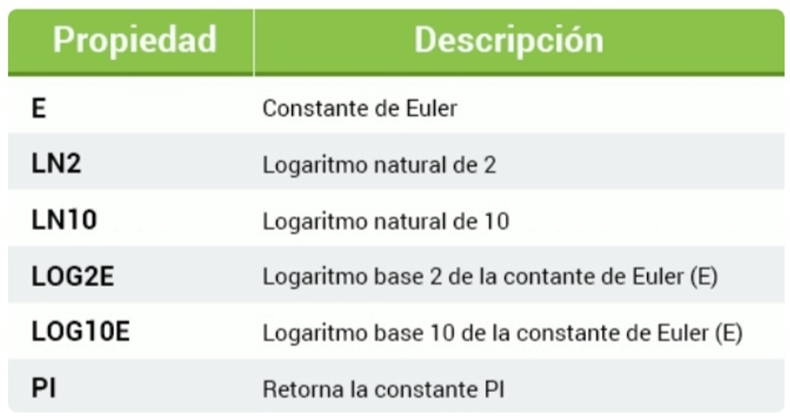
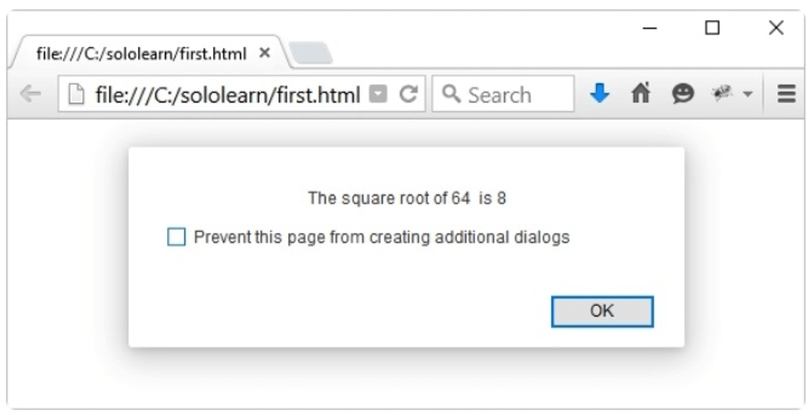

Los arreglos registran múltiples valores en un sola variable.
Para registrar tres nombres de cursos, necesitas tres variables.
var curso1 = "HTML";
var curso2 = "CSS";
var curso3 = "JS";
Pero, ¿qué pasa si tienes 500 cursos? La solución es un objeto predefinido de JavaScript llamado arreglo (o array).
var cursos = new Array("HTML", "CSS", "JS");
Esta sintaxis declara un arreglo llamado cursos, el cual registra tres valores, o elementos.
Accediendo a un arreglo
Se hace referencia a un elemento de un arreglo (o matriz) mediante su número de índice escrito entre corchetes.
Esta declaración accede al valor del primer elemento del arreglo "cursos" y cambia el valor de su segundo elemento.
var cursos = new Array("HTML", "CSS", "JS");
var curso = cursos[0]; // HTML
cursos[1] = "C++"; // Cambia el segundo elemento
El primer elemento de un arreglo es [0]; el segundo, [1]; el tercero, [2]; etc. Los índices de un arreglo comienzan con 0.
Accediendo a un arreglo
Intentar acceder a un índice fuera del arreglo, retorna el valor undefined (indefinido).
var courses = new Array("HTML", "CSS", "JS");
document.write(courses[10]); //undefined
Nuestro arreglo courses tiene sólo tres elementos, por lo que el 10° índice, que sería el elemento numero 11, no existe (está indefinido).
Code Coach
Matrices
Otras formas para crear arreglos
Creando arreglos
También puedes declarar un arreglo, indicando el número de elementos que contendrá, y añadiendo los elementos posteriormente.
var cursos = new Array(3);
cursos[0] = "HTML";
cursos[1] = "CSS";
cursos[2] = "JS";
Un arreglo es un tipo especial de objeto. Un arreglo utiliza números para acceder sus elementos, y un objeto utiliza nombres para acceder a sus miembros.
Creando arreglos
Los arreglos en JavaScript son dinámicos, por lo que puedes declarar un arreglo y no pasarle ningún argumento a su función constructora Array(). Y posteriormente, puedes añadir los elementos de forma dinámica.
var cursos = new Array();
cursos[0] = "HTML";
cursos[1] = "CSS";
cursos[2] = "JS";
cursos[3] = "C++";
Puedes añadir tantos elementos como necesites.
Literales de arreglos
Para mayor simplicidad, legibilidad, y velocidad de ejecución, también puedes declarar arreglos utilizando la sintaxis de literal de arreglos.
var cursos = ["HTML", "CSS", "JS"];
El resultado es el mismo arreglo que el que fue creado con la sintaxis new Array().
Puedes acceder a los elementos del arreglo y modificarlos utilizando su número de índice, tal y como lo hiciste anteriormente.
La sintaxis de literal de arreglo es la manera recomendada para declarar arreglos.
Propiedades y métodos de los arreglos
La propiedad length
Los arreglos en JavaScript tienen propiedades y métodos útiles integrados de manera estándar.
La propiedad length (longitud) de un arreglo retorna el número de sus elementos.
var cursos = ["HTML", "CSS", "JS"];
document.write(cursos.length);
La propiedad length es siempre uno más que el mayor índice del arreglo. Si el arreglo está vacío, la propiedad length retorna 0.
Combinando arreglos
El método concat() de JavaScript te permite juntar arreglos y crear un arreglo completamente nuevo.
Ejemplo:
var c1 = ["HTML", "CSS"];
var c2 = ["JS", "C++"];
var courses = c1.concat(c2);
El arreglo courses resultante contiene 4 elementos (HTML, CSS, JS y C++).
La operación concat no afecta a los arreglos c1 y c2, sólo retorna la concatenación resultante como un nuevo arreglo.
Code Coach
Propiedades de matrices & método
Arreglos asociativos
Arreglos asociativos
Mientras que muchos lenguajes de programación soportan arreglos con nombres en los índices (texto en lugar de números), llamados arreglos asociativos, JavaScript no los soporta. Sin embargo, puedes utilizar la sintaxis de nombramiento de arreglos, que producirá un objeto.
Por ejemplo:
var persona = []; //arreglo vacío
persona["nombre"] = "John";
persona["edad"] = 46;
document.write(persona["edad"]); // 46
Ahora, persona es tratado como un objeto, en lugar de como un arreglo.
Los índices textuales "nombre" y "edad" se convierten en propiedades del objeto persona.
Como el arreglo persona es tratado como un objeto, los métodos y propiedades estándar para arreglos producirán resultados incorrectos. Por ejemplo, persona.length retornará 0.
Arreglos asociativos
Recuerda que JavaScript no soporta arreglos con índices textuales.
En JavaScript, los arreglos siempre usan índices numéricos.
Es mejor utilizar un objeto cuando quieres que el índice sea una cadena de texto.
Utiliza un arreglo cuando quieras que el índice , sea un numero.
Si utilizas un índice textual, JavaScript redefinirá el arreglo como un objeto estándar.
El objeto Math
El objeto Math
El objeto Math te permite realizar tareas matemáticas, e incluye varias propiedades [pares clave: valor; recuerda que puedes acceder a los valores de las propiedades de un objeto usando la sintaxis de punto: nombreDelObjeto.nombreDeLaPropiedad].

Por ejemplo:
document.write(Math.PI);
El objeto Math no tiene constructor. [No se puede usar la palabra clave new con el objeto Math para crear objetos de tipo Math]. No hay necesidad de primero crear un objeto Math.
Métodos del objeto Math
El objeto Math posee muchos métodos [propiedades que son funciones] que son utilizados para hacer cálculos:
Por ejemplo, el siguiente código calculará la raíz cuadrada de un número.
var raiz_cuadrada_de_4 = Math.sqrt(4);
document.write(raiz_cuadrada_de_4);
Para obtener un número entero aleatorio entre 1 y 10, utiliza el método Math.random(), el cual te da un número entre 0 y 1. A continuación multiplica el número obteniendo por 10, y elimina su parte decimal redondeándolo al número entero mayor más cercano mediante el método Math.ceil(): Math.ceil(Math.random() * 10).
Code Coach
El objeto Math
El objeto Math
Vamos a crear un programa que solicitará al usuario que ingrese un número y alertará su raíz cuadrada.
var n = prompt("Enter a number", "");
var answer = Math.sqrt(n);
alert("The square root of " + n + " is " + answer);
Resultado:
Ingrese un número, como 64.

Math es un objeto útil. Puedes ahorrar mucho tiempo utilizando Math en vez de escribir tus propias funciones cada vez.
El objeto Date
Método setlnterval
El método setlnterval(funcion, milisegundos) llama una función o evalúa una expresión a intervalos específicos (en milisegundos).
Este método continuará llamando a la función pasada como argumento hasta que el método clearlnterval(ID_del_intervalo) es llamado o la ventana es cerrada.
Por ejemplo:
function myAlert() {
alert("Hi");
}
setInterval(myAlert, 3000);
Este código llamará la función myAlert cada 3 segundos (1000 ms = 1 segundo).
Escribe el nombre de la función sin los paréntesis cuando la pases como argumento al método setlnterval.
El objeto Date
El objeto Date (fecha en Inglés) nos permite trabajar con fechas.
Una fecha consiste en un año, un mes, un día, una hora, un minuto, un segundo, y milisegundos.
Al utilizar new Date(), creamos un nuevo objeto "date" con la fecha y hora actual.
var d = new Date(); //d almacena la fecha y hora actual
Las otras formas de inicializar fechas nos permiten la creación de nuevos objetos "date" a partir de la fecha y hora especificada.
new Date(milisegundos)
new Date(cadenaDeFecha)
new Date(anio, mes, dia, horas, minutos, segundos, milisegundos)
Las fechas en JavaScript son calculadas en milisegundos desde el 1‚Å∞ de Enero de 1970 00:00:00 hora universal (UTC). Un día contiene 86.400.000 milisegundos.
Por ejemplo
//viernes 2 de enero de 1970, 00:00:00 hs
var d1= new Date(86400000);
//viernes 2 de enero de 2015, 10:42:00 hs
var d2 = new Date("January 2, 2015 10:42:00");
//sábado 11 de junio de 1988, 11:42:00 hs
var d3 = new Date(88,5,11,11,42,0,0);
JavaScript cuenta los meses desde 0 y hasta 11. Enero es 0 y diciembre es 11.
Los objetos Date son estáticos, en lugar de dinámicos. La hora de tu computadora continúa avanzando, pero los objetos date una vez creados no cambiarán.
Métodos del objeto Date
Cuando un objeto Date es creado, una serie de métodos hacen posible ejecutar operaciones en él.
Por ejemplo:
var d = new Date();
var hours = d.getHours();
//hours es igual a la hora actual
Vamos a crear un programa que imprima la hora actual en el navegador cada segundo.
function printTime() {
var d = new Date();
var hours = d.getHours();
var mins = d.getMinutes();
var secs = d.getSeconds();
document.body.innerHTML = hours+":"+mins+":"+secs;
}
setInterval(printTime, 1000);
Hemos declarado una función printTime, la cual toma la hora actual del objeto date, y la imprime en la pantalla.
Luego llamamos a la función una vez cada segundo, utilizando el método setlnterval.
La propiedad innerHTML establece o retorna el contenido de un elemento HTML [o sea lo que está encerrado entre sus etiquetas de apertura y de cierre].
En nuestro caso, estamos cambiando el contenido del elemento "body" de nuestro documento HTML. Este código sobrescribe el contenido cada segundo, en lugar de imprimirlo continuamente en la pantalla.